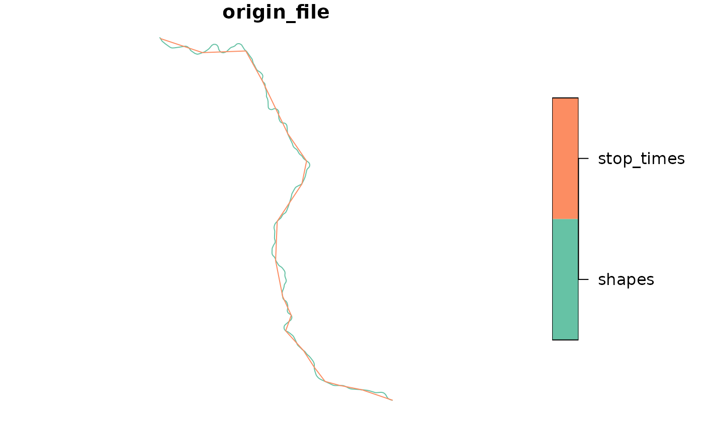

The General Transit Feed Specification (GTFS) data format defines a common scheme for describing transit systems, and is widely used by transit agencies around the world and consumed by many software applications. The gtfstools package makes handling GTFS data in R very easy and fast, offering many utility functions to read, manipulate, analyze and write transit feeds in such format.
GTFS feeds exist in two main different forms: the GTFS static and the GTFS realtime. This package allows you to manipulate GTFS static feeds, the most common variation. These feeds are the collection of many csv-like files (with a .txt extension) contained in a single .zip file. A GTFS .zip file is composed by at least five required files, but may also contain a few other conditionally required and optional files:
agency.txt, stops.txt, routes.txt, trips.txt, stop_times.txt
calendar.txt, calendar_dates.txt, feed_info.txt
fare_attributes.txt, fare_rules.txt, shapes.txt, frequencies.txt, transfers.txt, pathways.txt, levels.txt, translations.txt, attributions.txt
Please check the official GTFS reference for more details on the specification.
Before using gtfstools please make sure that you have it installed in your computer. You can download either the most stable version from CRAN…
install.packages("gtfstools")…or the development version from GitHub.
install.packages("gtfstools", repos = "https://dhersz.r-universe.dev")
# or
# install.packages("remotes")
remotes::install_github("ipeaGIT/gtfstools")Then attach it to the current R session:
A few sample files are included in the package:
data_path <- system.file("extdata", package = "gtfstools")
list.files(data_path)
#> [1] "ber_gtfs.zip" "ggl_gtfs.zip" "poa_gtfs.zip" "spo_gtfs.zip"ggl_gtfs.zip has been manually built from the example GTFS feed provided by Google. The files samples are licensed under Creative Commons Attribution 4.0 License.spo_gtfs.zip is a subset of the São Paulo’s SPTrans feed, available here.ber_gtfs.zip is a subset of Berlin’s GTFS, available here.poa_gtfs.zip is a subset of Porto Alegre’s EPTC feed, available here.Throughout this demonstration we will be using São Paulo’s and Google’s feeds.
gtfstools reads feeds as a list of data.tables, a high-performance version of base R’s data.frames. Thus, reading, writing and manipulating GTFS objects created by gtfstools is very easy and fast even if some of your tables contain a few million rows.
To read a feed use the read_gtfs() function. By default the function reads all .txt files contained in the main .zip file. It may be useful, however, to read only a couple of specific files, specially if you’re dealing with some big data sets. To do so, specify which file you want to read in the files argument (without the .txt extension):
spo_path <- file.path(data_path, "spo_gtfs.zip")
# default behaviour
spo_gtfs <- read_gtfs(spo_path)
names(spo_gtfs)
#> [1] "agency" "calendar" "frequencies" "routes" "shapes"
#> [6] "stop_times" "stops" "trips"
# only reads the 'shapes.txt' and 'trips.txt' files
spo_shapes <- read_gtfs(spo_path, files = c("shapes", "trips"))
names(spo_shapes)
#> [1] "shapes" "trips"Please note that date fields are read as columns of class Date, instead of being kept as integers (as specified in the official reference), allowing for easier data manipulation. These columns are converted back to integers when writing the GTFS objects to a .zip file, so GTFS files generated by the package always conform to the specification.
gtfstools also includes a few functions to prevent you from getting stuck with repetitive tasks:
get_trip_geometry() returns the geometry of each trip in a GTFS object as an sf object (please check {sf} webpage for more details). GTFS data allows you to generate geometries using two different methods: either converting the shapes described in the shapes.txt file to an sf, or linking the subsequent stops of each trip as described in the stop_times.txt along a straight line. While the former tends to yield more reliable and higher resolution geometries, it may be useful to compare the results of both methods to check if the trips described in stop_times actually resemble their actual shape:
trip_geom <- get_trip_geometry(spo_gtfs, file = "shapes")
plot(trip_geom$geometry)
single_trip <- spo_gtfs$trips$trip_id[1]
single_trip
#> [1] "CPTM L07-0"
# 'file' argument defaults to c("shapes", "stop_times")
both_geom <- get_trip_geometry(spo_gtfs, trip_id = single_trip)
plot(both_geom["origin_file"])
get_trip_duration() returns the duration of each trip in a GTFS object, as specified in the stop_times file, in the temporal unit of your desire (either seconds, minutes, hours or days):
trip_durtn <- get_trip_duration(spo_gtfs, unit = "s")
head(trip_durtn)
#> trip_id duration
#> 1: 2002-10-0 2880
#> 2: 2105-10-0 6480
#> 3: 2105-10-1 6660
#> 4: 2161-10-0 5640
#> 5: 2161-10-1 5580
#> 6: 4491-10-0 4140
# 'unit' argument defaults to "min"
single_durtn <- get_trip_duration(spo_gtfs, trip_id = single_trip)
single_durtn
#> trip_id duration
#> 1: CPTM L07-0 136get_trip_segment_duration() is a similar function, that even takes the same arguments, but returns the duration of each trip segment (i.e. the time interval between two consecutive stops).
trip_seg_durtn <- get_trip_segment_duration(spo_gtfs, unit = "s")
head(trip_seg_durtn)
#> trip_id segment duration
#> 1: CPTM L07-0 1 480
#> 2: CPTM L07-0 2 480
#> 3: CPTM L07-0 3 480
#> 4: CPTM L07-0 4 480
#> 5: CPTM L07-0 5 480
#> 6: CPTM L07-0 6 480
single_seg_durtn <- get_trip_segment_duration(spo_gtfs, trip_id = single_trip)
head(single_seg_durtn)
#> trip_id segment duration
#> 1: CPTM L07-0 1 8
#> 2: CPTM L07-0 2 8
#> 3: CPTM L07-0 3 8
#> 4: CPTM L07-0 4 8
#> 5: CPTM L07-0 5 8
#> 6: CPTM L07-0 6 8The quick example above shows how this function may help you diagnosing some problems in your GTFS data: apparently every single trip in spo_gtfs is composed by several equally long segments, which looks unreasonable.
Finally, get_trip_speed() is a helper around get_trip_geometry() and get_trip_duration() that returns the average speed of each trip in a GTFS object:
trip_speed <- get_trip_speed(spo_gtfs, unit = "m/s")
head(trip_speed)
#> trip_id origin_file speed
#> 1: 2002-10-0 shapes 2.486809
#> 2: 2105-10-0 shapes 2.848157
#> 3: 2105-10-1 shapes 2.720915
#> 4: 2161-10-0 shapes 3.106259
#> 5: 2161-10-1 shapes 3.273461
#> 6: 4491-10-0 shapes 3.667656
# 'unit' argument defaults to "km/h"
single_trip_speed <- get_trip_speed(spo_gtfs, trip_id = single_trip)
single_trip_speed
#> trip_id origin_file speed
#> 1: CPTM L07-0 shapes 26.78777Each table inside a GTFS object can be easily manipulated using the usual data.table syntax. data.table provides many useful features, such as updating columns by reference, fast binary search, efficient data aggregation, and many others, allowing you to deal with large data sets very efficiently. Please check its official website for more details on syntax and usage.
Just remember that, since every GTFS object is a list of data.tables, you must refer to each table using the $ operator. For example, this is how you’d remove the headway_secs column from the frequencies file and add it again afterwards:
old_headway_secs <- spo_gtfs$frequencies$headway_secs
spo_gtfs$frequencies[, headway_secs := NULL]
head(spo_gtfs$frequencies)
#> trip_id start_time end_time
#> 1: CPTM L07-0 04:00:00 04:59:00
#> 2: CPTM L07-0 05:00:00 05:59:00
#> 3: CPTM L07-0 06:00:00 06:59:00
#> 4: CPTM L07-0 07:00:00 07:59:00
#> 5: CPTM L07-0 08:00:00 08:59:00
#> 6: CPTM L07-0 09:00:00 09:59:00
spo_gtfs$frequencies[, headway_secs := old_headway_secs]
head(spo_gtfs$frequencies)
#> trip_id start_time end_time headway_secs
#> 1: CPTM L07-0 04:00:00 04:59:00 720
#> 2: CPTM L07-0 05:00:00 05:59:00 360
#> 3: CPTM L07-0 06:00:00 06:59:00 360
#> 4: CPTM L07-0 07:00:00 07:59:00 360
#> 5: CPTM L07-0 08:00:00 08:59:00 360
#> 6: CPTM L07-0 09:00:00 09:59:00 480gtfstools also provides some functions that help you getting over some common tasks. merge_gtfs() takes many GTFS objects and combines them row-wise. By default the function binds every table inside the objects, but you can specify which tables you want to merge with the files argument:
ggl_path <- file.path(data_path, "ggl_gtfs.zip")
ggl_gtfs <- read_gtfs(ggl_path)
names(spo_gtfs)
#> [1] "agency" "calendar" "frequencies" "routes" "shapes"
#> [6] "stop_times" "stops" "trips"
names(ggl_gtfs)
#> [1] "calendar_dates" "fare_attributes" "fare_rules" "feed_info"
#> [5] "frequencies" "levels" "pathways" "routes"
#> [9] "shapes" "stop_times" "stops" "transfers"
#> [13] "translations" "trips" "agency" "attributions"
#> [17] "calendar"
merged_gtfs <- merge_gtfs(spo_gtfs, ggl_gtfs)
names(merged_gtfs)
#> [1] "agency" "calendar" "frequencies" "routes"
#> [5] "shapes" "stop_times" "stops" "trips"
#> [9] "calendar_dates" "fare_attributes" "fare_rules" "feed_info"
#> [13] "levels" "pathways" "transfers" "translations"
#> [17] "attributions"
# only merges the 'shapes' and 'trips' tables
merged_files <- merge_gtfs(spo_gtfs, ggl_gtfs, files = c("shapes", "trips"))
names(merged_files)
#> [1] "shapes" "trips"set_trip_speed() sets the average speed of specified trips by adjusting the arrival_time and departure_time columns in the stop_times table. Average speed is calculated as the difference between the arrival time at the last stop minus the departure time at the first top, divided by the trip’s length. Please note that arrival and departure times at intermediate stops are set as "". Some transport routing software, such as OpenTripPlanner and R5, support specifying stop times like so, in which case they interpolate arrival/departure times at intermediate stops based on the trip’s average speed and the euclidean distance between stops.
selected_trips <- c("2002-10-0", "CPTM L07-0")
get_trip_speed(spo_gtfs, selected_trips, unit = "km/h")
#> trip_id origin_file speed
#> 1: 2002-10-0 shapes 8.952511
#> 2: CPTM L07-0 shapes 26.787768
# 'speed' is recycled to all trips if only a single value is given
new_speed_gtfs <- set_trip_speed(spo_gtfs, selected_trips, 50)
get_trip_speed(new_speed_gtfs, selected_trips)
#> trip_id origin_file speed
#> 1: 2002-10-0 shapes 50.06453
#> 2: CPTM L07-0 shapes 50.00874
# but you can also specify different speeds for each trip
new_speed_gtfs <- set_trip_speed(spo_gtfs, selected_trips, c(30, 40))
get_trip_speed(new_speed_gtfs, selected_trips)
#> trip_id origin_file speed
#> 1: 2002-10-0 shapes 30.01541
#> 2: CPTM L07-0 shapes 40.00516Finally, write_gtfs() allows you to save your GTFS objects to disk. It defaults to writing every single table inside the object as a .txt file, but you can conditionally exclude files if you so wish:
temp_dir <- file.path(tempdir(), "gttools_vig")
dir.create(temp_dir)
list.files(temp_dir)
#> character(0)
filename <- file.path(temp_dir, "spo_gtfs.zip")
write_gtfs(spo_gtfs, filename)
list.files(temp_dir)
#> [1] "spo_gtfs.zip"
zip::zip_list(filename)$filename
#> [1] "agency.txt" "calendar.txt" "frequencies.txt" "routes.txt"
#> [5] "shapes.txt" "stop_times.txt" "stops.txt" "trips.txt"
write_gtfs(spo_gtfs, filename, files = c("stop_times", "trips", "calendar"))
zip::zip_list(filename)$filename
#> [1] "stop_times.txt" "trips.txt" "calendar.txt"write_gtfs() also converts Date columns back to integer, producing GTFS files that conform to the official specification.